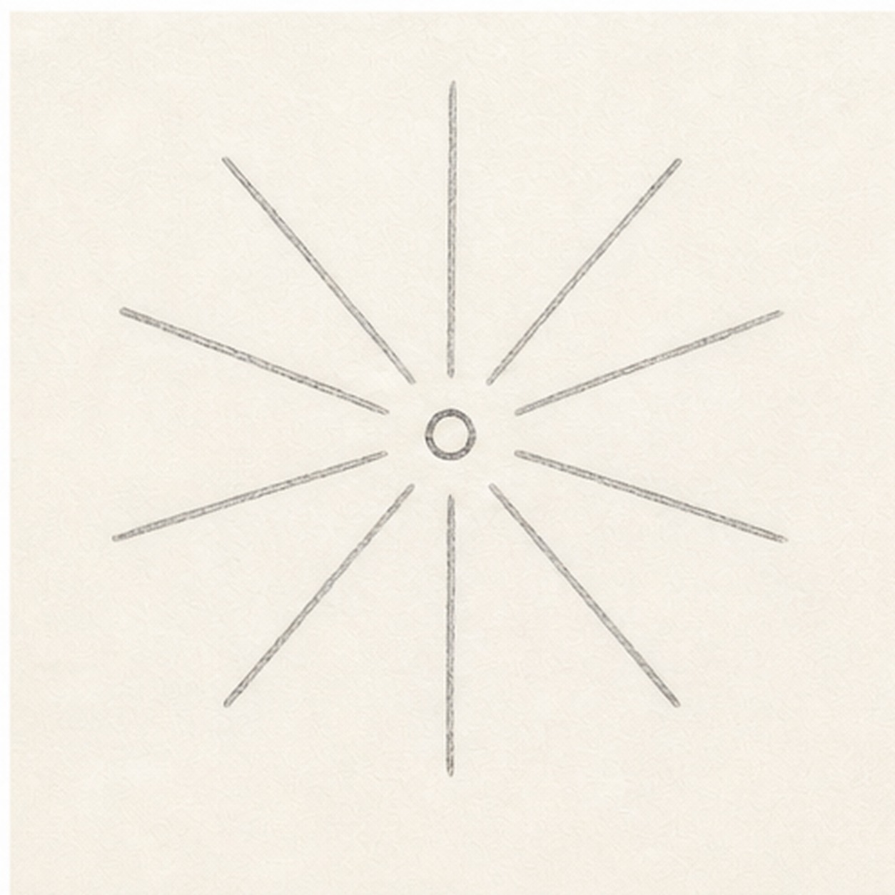
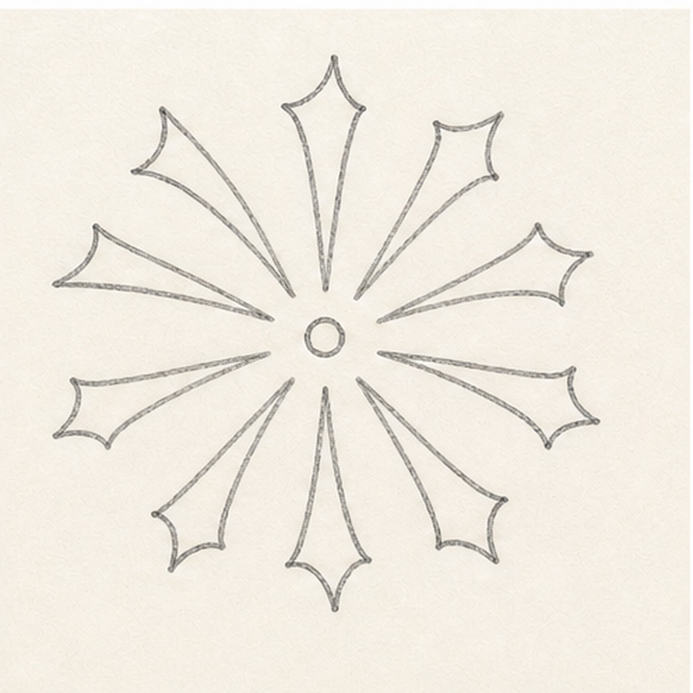
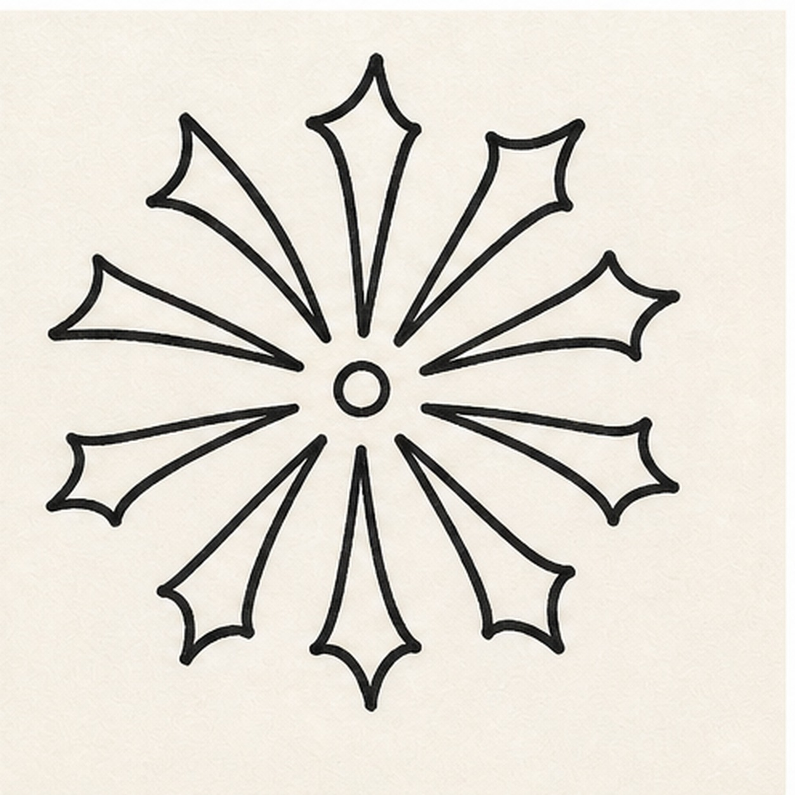
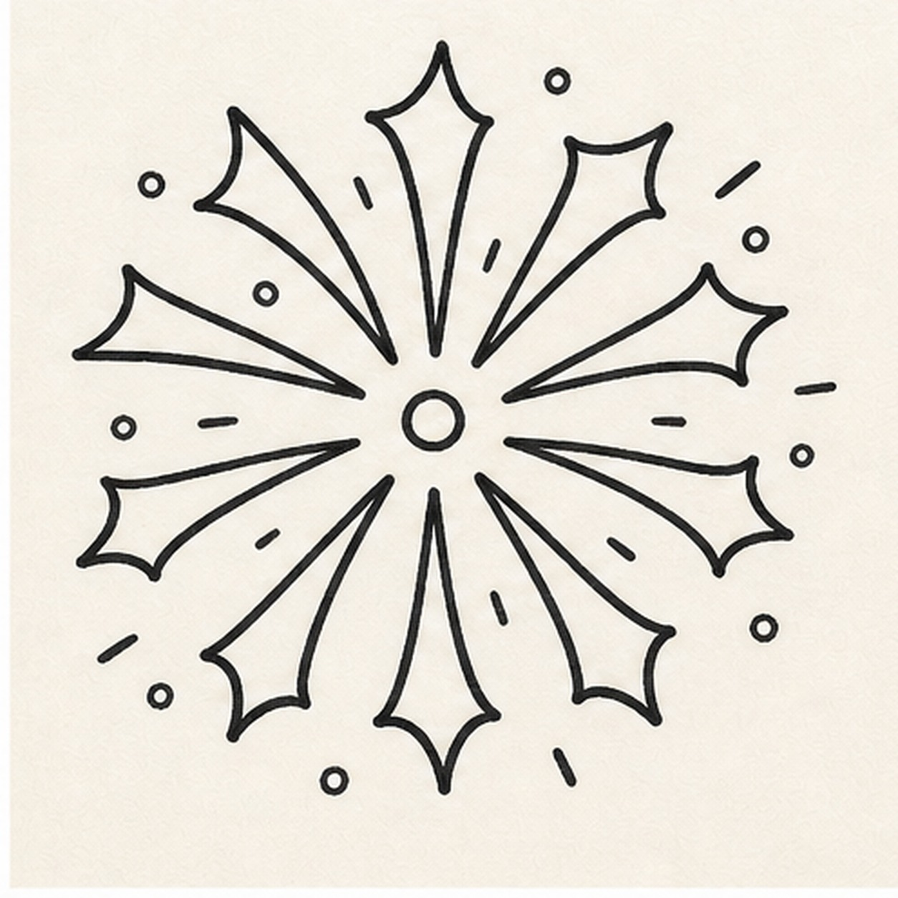
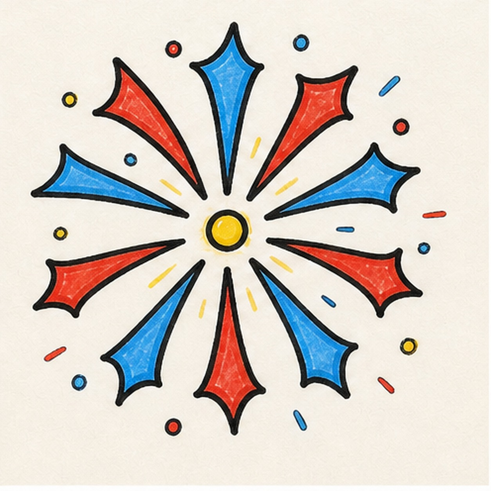

Felt-tip marker mode
Let's doodle a firework burst
Use loose curves first, then switch to confident marker outlines and bright fills.
-
01

Draw the burst guides
Draw a small center circle, then place light spoke guides around it like a simple starburst.
Doodle tip: Leave gaps between the spokes. Those gaps will keep the colored bursts from touching each other.
-
02

Shape the star tips
Turn each guide into a long rounded diamond or kite shape, alternating tall and short bursts.
Doodle tip: Vary the lengths a little. A perfect clock shape can look stiff.
-
03

Thicken the burst outline
Trace the center circle and every burst shape with a confident black marker line.
Doodle tip: Slow down at the points. Rounded tips are friendlier and easier to color than sharp spikes.
-
04

Add little sparks
Scatter small dots and short dash marks around the outside of the burst.
Doodle tip: Keep the sparks away from the main shapes so the firework still has a clean silhouette.
-
05

Fill the firework color
Color the center yellow, then alternate red and blue marker fill through the burst shapes and tiny sparks.
Doodle tip: Let marker streaks show inside each burst. The texture makes the doodle feel handmade.
-
06
Punch up the firework
Go back over the black outline, strengthen the red, blue, and yellow fills, and add small white highlight marks inside the shapes.
Doodle tip: Do not add new burst arms at the end. This pass should only make the shapes you already drew brighter.